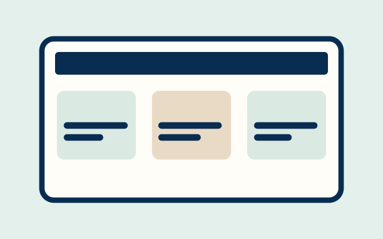

Daily cash check
Review money received, cash moved, and what is left on hand.
Built around everyday decisions
These are planned features for IC, not functions of a finished application.
Review money received, cash moved, and what is left on hand.
See sales alongside estimated taxes, payment fees, and deductions.
Keep due dates in view so expenses are easier to plan around.
Compare the expected drawer amount with a counted amount.
See an illustrative sales target informed by upcoming expenses.
Find key money tasks together instead of checking several places.
Example screen
The sample dashboard on the homepage shows how sales, bills, and cash could appear together. The amounts are illustrative only.
View dashboard example →